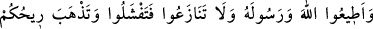

Muhammed’in Rabb’ine tapıyor idiyse O diridir, ölmez.”
Mücâhid, zulümden ve günahlardan uzak durmalıdır. Çünkü düşmana galip gelmek
mânevî (kudsî) kuvvet ve ilâhî teyid iledir, maddî (cismânî) kuvvetle, sayının ve harp
hazırlıklarının çokluğu ile değildir. Görmez misin ki Allah Teâlâ Bedir Gazvesi’nde
müminlerin sayısı az, müşriklerin ise çok olduğu halde nasıl müminleri teyid etti. Allah
yolunda takvâ, sabır ve sebatla cihad edenler mutlaka düşmanlarına galip gelirler ve
yüksek derecelere ulaşırlar.
Bazan fırtına gibi süratli, bazan sâbit dağ gibi
Bazan güvercin gibi süzülür, bazan kartal gibi yükselir
İskender, ordusunu teftiş ediyordu. Topal bir at üstünde bir adam öne çıktı. İskender
onun ordudan çıkarılmasını emretti. Bunun üzerine adam güldü. Böyle bir durumda
adamın gülmesini yadırgayan İskender ona:
“–Seni ordudan çıkardığım halde neden gülüyorsun?” diye sordu. Adam:
“–Sana hayretimden.” dedi. İskender:
“–Hayret edilecek ne var ki?” deyince, adam:
“–Senin altında harpten kaçma vasıtası var. Bende ise sebat vasıtası. Hal böyleyken
beni ordudan atıyorsun.” dedi. Bu söz İskender’in hoşuna gitti ve adamı orduda bıraktı.
Sonra bilesin ki zâhirdeki azgın topluluk, kâfirler ve fâcirler gürûhudur. Bâtında ise
nefsânî kuvvetler ve nefs-i emmârenin topluluğu gibileridir. Mümin zâhirde azgın bir
topluluk karşısına çıktığında sebât etmekle emrolunduğu gibi bâtında azgın bir topluluk
zuhûr ettiğinde onların karşısında mücâhedelerle sebat etmekle emrolunmuştur.
Kâfirlerle yapılan cihad küçük cihaddır. Nefis ile yapılan ise büyük cihaddır. Büyük
olan ise küçük olandan efdaldir. Bu sebepledir ki büyük cihadda öldürülen sıddîk,
küçük cihadda öldürülen şehîd olur. Sıddîk, şehidden üstündür. Nitekim âyette sıddîklar
şehidlerden önce zikredilmiştir: “Kim Allah’a ve Rasûl’e itaat ederse işte onlar,
Allah’ın kendilerine nimetler verdiği peygamberler, sıddîklar, şehidler ve sâlih
kişilerle beraberdir. Bunlar ne güzel arkadaştır!” (en-Nisâ, 4/69)
Tabiat karanlığından kurtulmak ve kurtuluşa ermek, zikrin nurlarıyla olur. Zikir ile
meşgul olmak, cihad türlerinin en büyüklerindendir. Kulların Rabbi’ne vuslatı için en
hızlı vasıtalardan da biridir. Allah Teâlâ’dan bizi zikir ve tevhîdin hakikatlerine
erdirmesini niyaz ederiz.